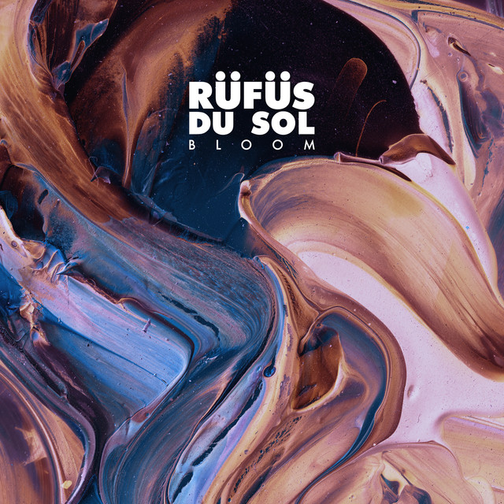
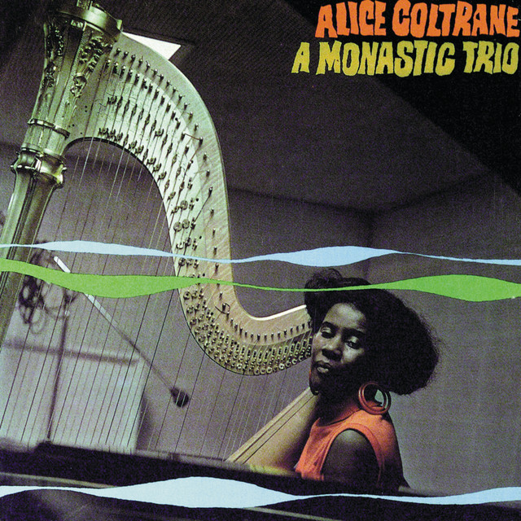

Categoria: Eletrônica

InnerBloom - Rufus du Sol
InnerBloom é uma música sensacional do estilo de eletronica,
capaz de criar sensações indiscretiveis em quem escuta,
sendo cada uma sensação única e especial, produzida pelo Rufus du Sol
um renomado Dj da aréa
Artista: Rufus du Sol
Escute
Categoria: Sertanejo
Paradigmas - Jorge e Matheus
A música 'Paradigmas' é uma declaração de amor que explora a surpresa e a intensidade de um sentimento que nasce inesperadamente.
A música brinca com a ideia de ordem e caos no amor, indicando que a pessoa amada tem o poder de arrumar o que está bagunçado e bagunçar o que está arrumado, criando um equilíbrio dinâmico na vida do protagonista.
A repetição do refrão 'Sabe eu? Sou seu' e a expressão 'Coração bate fora da casinha' enfatizam a entrega total ao amor e a intensidade do sentimento que foge do controle. A paixão é tão forte que palavras se tornam desnecessárias, como sugere o verso 'Fala nada, só me ama'. A música celebra um amor que é ao mesmo tempo tranquilo e arrebatador, capaz de mudar percepções e trazer uma nova ordem à vida do apaixonado.
Artista: Jorge e Matheus
Escute
Categoria: Rap
Libertarios não morrem - Filipe Ret
A música 'Libertários Não Morrem' é um manifesto de resistência e liberdade individual.
A letra transmite uma mensagem de desobediência civil e desapego às normas sociais que restringem
o comportamento humano. A música se torna um hino para aqueles que se sentem oprimidos e buscam na
arte uma forma de expressar sua luta por um mundo mais justo e livre.
Artista: Filipe Ret
Escute

Só os loucos sabem - Charlie Brown Jr.
A música 'Só Os Loucos Sabem' é uma composição que reflete sobre a vida, as escolhas e a busca por paz interior,
letra traz uma mensagem de superação e aprendizado através das experiências vividas, fala sobre recomeços, amizade, companheirismo,
transformação e esperança.A frase "o impossível é só questão de opinião" transmite a ideia de que não há impossibilidades para quem é
determinado, resiliente, dedicado e decidido.
Artista: Charlie Brown Jr.
Escute
Categoria: Jazz & Blues

The Sun - Alice Coltrane
"The Sun" é uma das faixas mais emblemáticas de Alice Coltrane, uma artista que não apenas desafiou as normas do jazz, mas também trouxe uma sensibilidade espiritual e mística à sua música.
Ao ouvir "The Sun", somos imediatamente envolvidos por uma atmosfera que evoca tanto luz quanto introspecção.
O título da música é uma referência poderosa, sugerindo a ideia de iluminação e renovação. Os sentimentos evocativos em "The Sun" são profundos. A música parece fluir como um rio de consciência, explorando temas de esperança, espiritualidade e a conexão entre o humano e o divino. O sol, como símbolo, representa não apenas a luz e a vida, mas também a clareza que surge após momentos de escuridão e incerteza. Isso ressoa com a própria trajetória de vida de Alice,
que passou por desafios pessoais e encontrou na música uma forma de cura e expressão.
Artista: Alice Coltrane
Escute